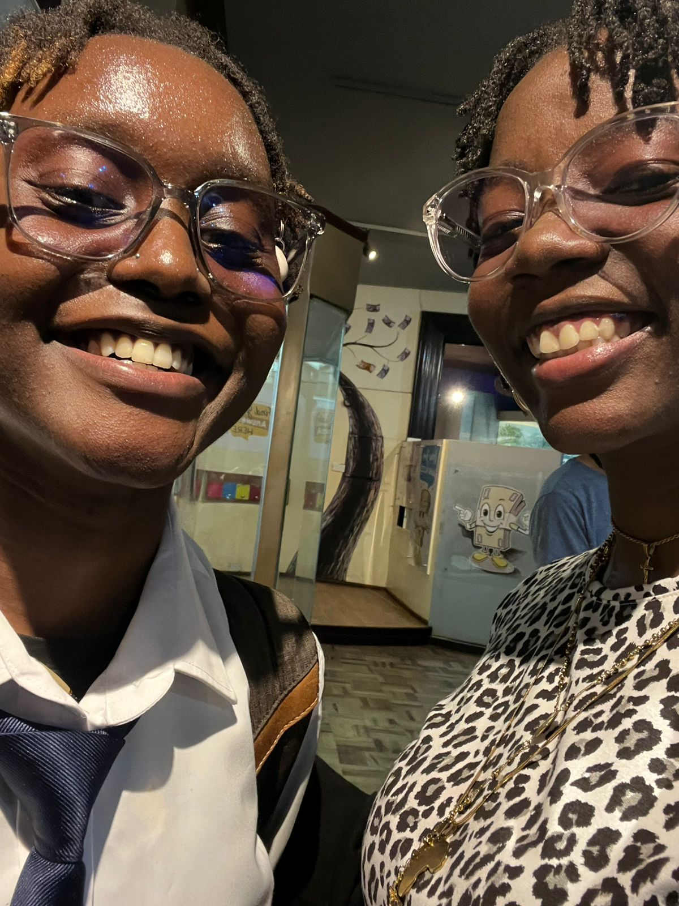

Hey Princessa.
Here's a not-so-little surprise I tried making for us today. ğŸ¤ğŸ¤
This will be a walk down memory lane of our journey thus far
(with a few (okay, wongo) snapshots of you, because you're definitely the most beautiful woman ever)
in celebration of the people we have grown to be, with and for one another. 🩵🩵
Sit back, relax, and perhaps get a tissue in advance <3 and enjoy.
I hope it makes your day as bright as you are to me ❤️
Our Journey Together, Season 2
August, The Beginning 🩵
From the first time we met (again), I knew you were more than just someone to be friends with. 🫠ğŸ«
And so I made sure I would never hold you, heart, mind and soul without having the honour to do so. 🩵
True to how I valued you, you proved to bring happiness I had thought unaccessible to and for me. 🥹🥹
Like here, letting me clean your gadgets just because it makes me happy, not because it's necessary. 🫠ğŸ«
Random break to admire you (again) hehehe ❤️
Every day I have the honour of being the beholder of your beauty, I need to stare to take you in 🩵
Every day with you is filled with love, laughter, and unforgettable memories ❤️
We built a tradition and fondness of having Kwikmat Bowoz, and I still cannot have them without you in mind
(not on some manly exaggerated lie) 🩵
We also built an aura of warmth and safety for each other; the beginning of our blooming 🩵
September, Our Second Month Together ğŸ«
We begin a reflection of our second month together with a view of your undeniable beauty 😮‍💨😮‍💨

We fell kidogo into the museum visit trap, and nonetheless, we made the best of it, as we always do 🥰🥰
And on that day (like any other day I get to be with you, in person or not),
I captured your beautiful smile, that I look to keep bringing to you ğŸ«
for as long as I have the honour of calling you mine and I yours ❤️
Random view of the photo I have set to your contact, because we're goofy like that ❤️
October, The Final Month of the Honeymoon Phase 😮‍💨
We continued to learn one another, all while maintaining our childish exitement with and for one another 🥹🥹
We also built a space comfortable and safe enough for each other to still be able to study with and around each other ❤️
This was on your birthday, when I first (first really? IDK) surprised you when you least expected,
because it's the day you graced this world with your authenticity, and I wanted to make sure you were/are and felt appreciated 🩵
November, The Fourth Month 😊
This month was not decorated with much of us being around each other much, but this collage still perfectly blended how we are together ❤️
December, Concretizing Our Foundation 😌
We made up for "lost time" on this day, and I hold this day dearly at heart ❤️
This is a literal depiction of how my inner child feels around you ğŸ«
And an ultimate bonus is, you got to surprise me, for the first time,
and with a jersey of the same team that you have seen me having headaches because of, and still stuck around 🥹
Additional honourable view of my current Spotufy profile picture because we are in the perfect view 🩵
January, Navigating Our Individual Storms While Holding Space for Each Other 🥹
This was our first date at our most fequented restaurant for our first cakes date ğŸ¤
And this was my attempt at capturing your beauty and aesthetic in an artistic manner, because, dear God, you're beautiful ğŸ«
Bonus non-posing smiling photo of you because I am a firm believer that your smile is an extreme beauty to behold 🩵
This was us in a mini "GRWM" to go to attend a class with me at my school 🥹🥹
You're an absolute gorg beaut while you're studying and paying attention, and this was a sneak pic of that. 🫣🫣
The most captivating aspect about this was that you made peace with the discomfort of being in an unfamiliar place
if it meant that you got to spend extra time together, and even become more acquianted with my friends (first of the two times) 🫠ğŸ«
Group photo hihihi ğŸ¤ğŸ¤
This is a moment from that day, captured to eternalize that same moment, day, and anchored view of you in my mind 🩵
February, The Month of Love ❤️
This was the first poetry event we attended together, and a time was definitely had 🥹🥹
We kept maintaining our goofiness, with, for and around each other, and I love that about us 🩵
This, as you brilliantly described it on your post, is an ode to love, and amazing friendships ❤️
An eternal stamp of what healthy love and true friendship look like, and in one frame, capturing it all ğŸ«
A bonus of a captured moment of us in our authentic selves, and during an event that bonded us further in our arts 😊😊
Oh, this day, the interntional day of love ❤️
This day mattered to me simply because all I wanted to do was make you feel valued, locally and internationally (hehehe, mistari) 🩵
The only plan was to make you happy. It's always the only plan, if we're being honest. And happy you were (look at that smile, gosh). 🥹🥹
Additional evidence of you being happy on that day, because that is always my desire 🥹
To see you happy, and by lucky chance, be the reason for your happiness
because your smile gets me going for days, and you deserve happiness we both know no bounds to ğŸ«
March, Continued Establishment of Patience, Accommodation and Gentleness with One Another 🤗
A captured frame of how diverse we are in how we show up with and for one another ğŸ¤
whether it is being there on an important day of preparation for an interview
or helping each other with our jewellery (I still intentionally take off my necklaces around you so you can dress me in them) 😙
The first moment I ever captured you in your sleep, and I felt utterly achieved (clearly) 🥹🥹
to not only be a safe space for you to lay your head on, but have it framed
(like you do when I'm blacked out and in the safety and comfort of your presence)
Bonus moment of how gentle and at peace you look when you're asleep (and extremely gorgeous) ❤️
April, One of Our Hardest Times Together 😮‍💨
Even through one of the hardest times we had together, you still found a way to be and remain the loveliest woman in my eyes ❤️
And even with the time difference and lapses in communication, we did (as we always do) return to each other
as we kept learning what it looks like to have hard conversations with each other, especially during the hard times 🩵
Bonus of you looking absolutely scrumptious ❤️ (you already know this is my fvourite view of you, tihihihi)
May, Returning to One Another, More Deeply and intentionally 🩵
Taking an additional infinity-time moment to just be in awe of you and your beauty and your aura and (you get the gist of it) ❤️
On this day, we went for our first movie together, in person, other than our usual online ones ğŸ¤ğŸ¤
and coincidentally yet unintentionally matched fits, like we have pleny of times (oh to be in sync with you). 🫠ğŸ«
I also got to learn how much a fan of Marvel you are, and now have more motivation to update my MCU knowledge, because I get to talk about it with you 🥹🥹<3
My favourite frame of you from that day, because, dear me, what a powerhouse you are, and what a view of you this is 😮‍💨😮‍💨
This was our first hike together ❤️ and this is one of the many times you have me asleep next to you <3
Moments before a disaster we chose for ourselves 😂😂
Bonus moment of our never-ending goofiness ❤️
We conquered the most physically challenging time of our lives together ❤️
No one would even know or say that we were amongst the last people to arrive at this beautiful view
but we weren't in a race to be first, but instead to take every step while holding each other's hand the whole way
no matter how challenging every step kept being. We still kept each other going, and held each other until the end 🩵
Bonus capture of the beautiful view we arrived at, together ❤️
(no one should ever know that we nearly died trying to get there, ever. It's our little secret) ğŸ˜ğŸ˜
June, Our First Pride Month (and my Birthday Month) Together 🥰
Ahaa, you know what time it is? It's time for some pride raaaaarrr ğŸ«
Together, still in our element, and in intentional and conscious appreciation of one another 🥹🥹
Together, still maintaining our goofiness, from before we had grown fond of each other, to when we're figuring things out together 🩵
This was in celebration of a day I tend to sleep away (and that I cried away) 🩵
but not that that would have stopped you from making sure you did your best to appreciate me either way
and I am eternally grateful for that, a lot more than I express, in a futile attempt to be or seem "composed" ğŸ«
July, The Final Month of The First Year 🥹🩵
This is evidence of how much we can choose to push through if it means we choose one another, healthily 😊
Continued expression of our happy selves in our childish and goofy poses, as we always have from the beginning 🥹
No caption ❤️
Evidence of how we make the most of even the most mundane occurrences together ❤️
even if it's getting caught taking pictures in an elevator, and assuring a stranger that they did not show in the frame 😂😂
Clear depiction of how we never cease to exist as just two girlies figuring out adulting together ğŸ¤ğŸ¤
Looking Forward to Our Future
My Letter to You Today
Hi you again :)
Yeah, that might have been a bit plenty to put and call a not-so-little project, but YK, it's you, and you're worth the effort.
Growing with and in love with you for the past one year has been one of the most valuable and honourable moments of my life.
We have loved, we have fought, we have been upset, we have been happy, we have been lost, and still, we found our way back to each other.
The one thing that stands the test of time for sure is that I am definitely intentional on choosing you every single time.
I choose you when I am happy, and when I'm sad. When we're happy and when we're sad. When things are okay, and when they're not.
When things are easy, and when they're hard. When we're upset, and when we're floating in euphoria. I choose you, and I am more than
honoured to get to choose you every single time. Not that I am forced to, but because I want to. Through it all, I want to and will
choose you. It is not the easiest thing, journeying together and unlearning habits and traits that are almost part of our skin,
but I wouldn't have or choose any other to navigate it all with. There will be hard days, perhaps even harder than the ones we've seen.
There will be days when things will be complicated, when they will be difficult to navigate, but either way, I choose you. I want to choose you.
Even when the down days are inevitable, so are the higher ones. Days when all I want to do is stare at you in awe, because that's all
that I want to do in that given moment. Stare and take you in. Grow more and deeper in love with you. Grow as an individual for and
because of you, for me and for you, and for us. Consciously and intentionally choosing to do so, because I can. And on this day,
I celebrate the journey we have had. The journey we have had thus far, and the one we shall keep going on, for as long as
the universe allows us to. In this and every other lifetime, I would always find my way to you, to choose you, because you're more
than the best decision I have ever made in my life. And since I keep lacking sufficient words to express myself as deeply as I feel,
I shall keep doing my best to show it, grandly and subtly, often and rarely, comfortably and uncomfortably. If it means I get to hold
and be held by you, then I would make the choice to do so more times than I can count. All this to say, in different weaves of words,
that I love you. I love you, beyond the capacity of comprehension of my mind, or emotional containerization of my heart.
With abundant love on this day,
K.
There’s so much more I can’t wait to experience with you, and so I start with commemorating how far we have reached with this. 🩵
(you'll have it soon, or you already do)
From our little adventures to the big dreams we’ll chase together, I’m excited for all of it. 🌟 And I can't wait to see what it all looks for us 🩵